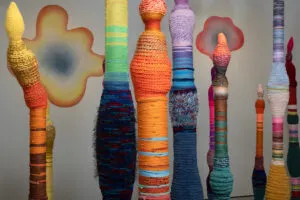
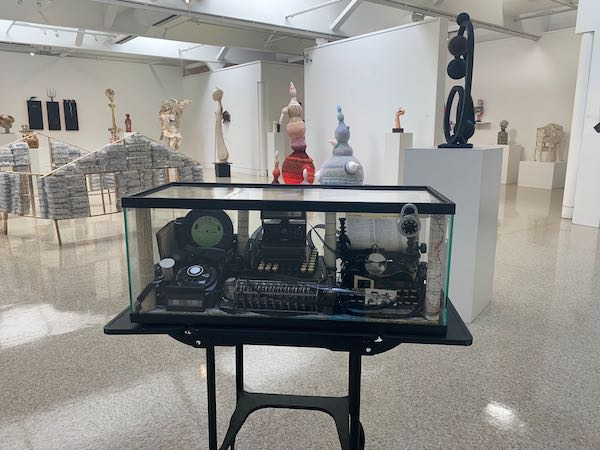
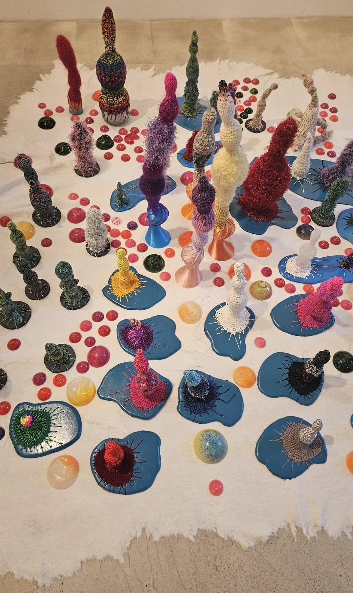
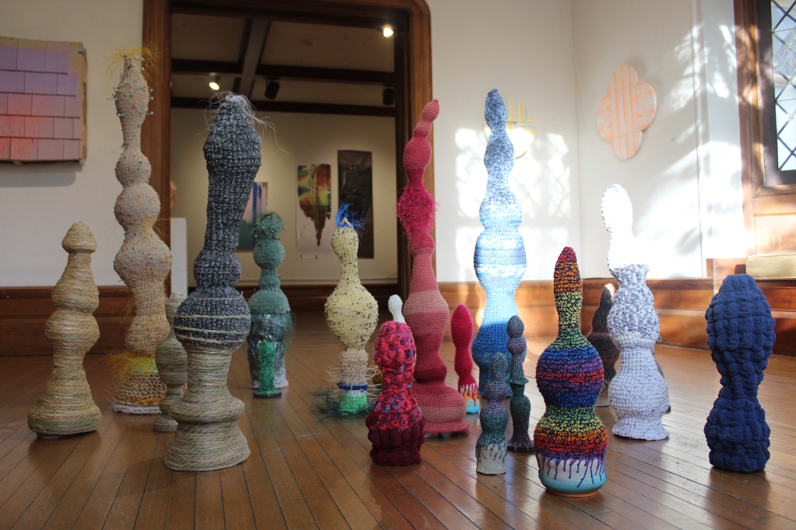
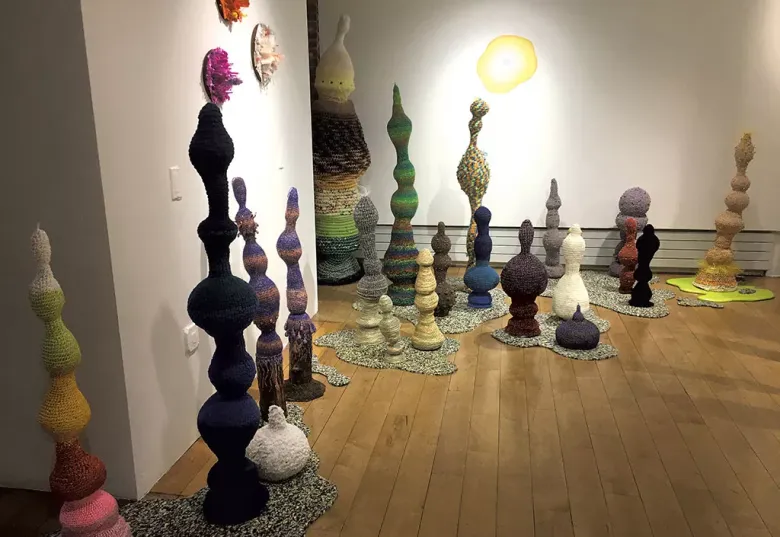
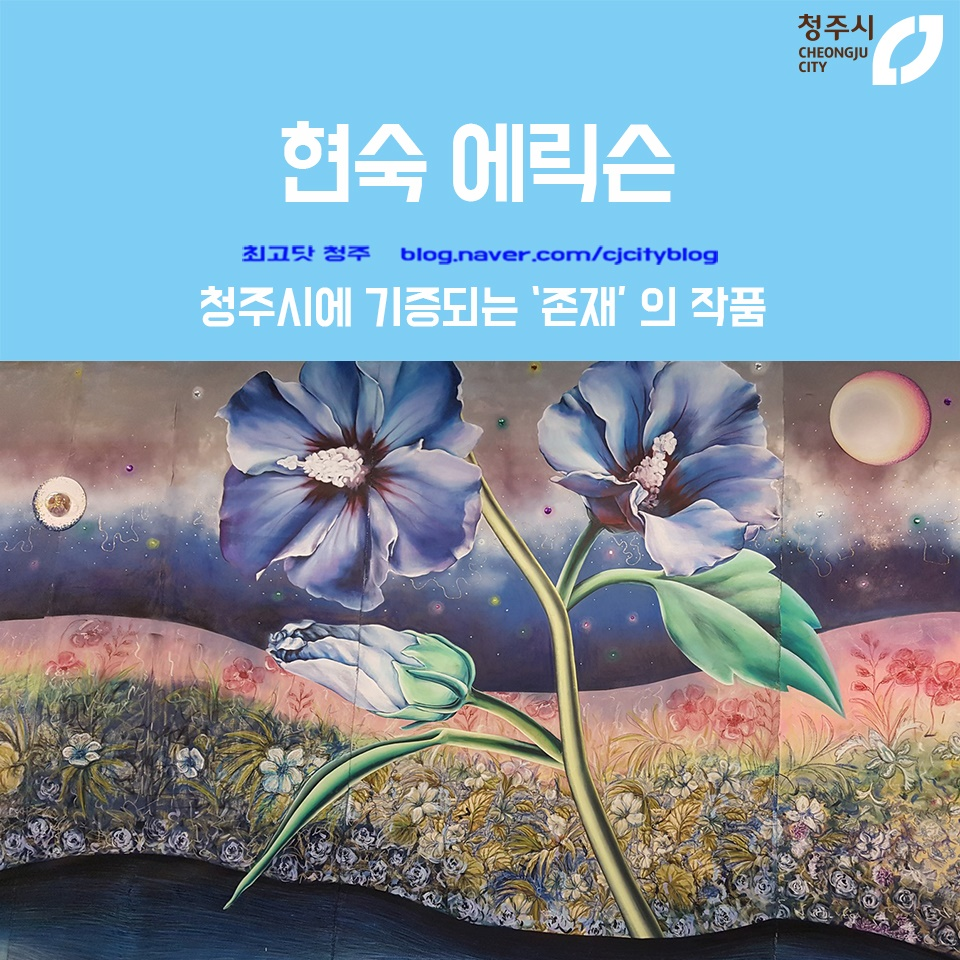

VISUALLY IF NOT CONCEPTUALLY, there's a strong link between Jones's paintings and the fabric-covered sculptures of Hyunsuk Erickson. The Seoul-born local artist's work has been included in several area group shows, often outdoor ones, but now she has a room of her own. "Thinggy of Their Town" fills IA&A at Hillyer's largest gallery with Erickson's trademark spires -- she calls them "thingumabobs" -- which are made of wood, plastic, or ceramic and dressed with colorful woven and embroidered materials.
Read article here


‘Still Something Singing’ showcases eight works by members of the Washington Sculptors Group. If forecasts of an unusually white winter prove correct, some of the eight sculptures in the Kreeger Museum’s “Still Something Singing” may well benefit. The outdoor exhibition includes Adam Bradley’s “Furies,” three hovering horizontal female figures assembled from patch wood and scrap metal, whose flight might appear all the more mythic if seen above snow-covered ground. And snowy branches would be an apt addition to Roger Cutler’s solemn “Memory Tree,” a set of five hanging bells engraved with the names of seven artist and musician friends who have died in the past decade.
Read article here

Hyunsuk Erickson’s Thingumabob Tribe #3 spreads out across one of the first-floor galleries of the Ely Center of Contemporary Art. Their sinuous shapes and bright colors might carry, for some viewers, suggestions of meaning. They could be seen as chess pieces, or as rock formations on an alien planet. Or perhaps they’re microscopic shapes brought to the human scale. On the other hand, are they really asking to be understood, to be perceived in that way? They can be taken as is, simply as shapes, forms, colors. Or anything in between, an apprehension of form, the content arising in the viewer.
Read article here

Stalagmites have sprouted in the BCA Center. Or so it might seem. In the second-floor gallery of the Burlington venue, Hyunsuk Erickson‘s installation presents dozens of skinny, vertical structures — some tiny, some very tall — in groupings around the room. Each is sweatered in myriad colors and textures of crocheted yarn. The shapes of these, um, things are variously knobby, twisty and minaret-y, yet each reaches inexorably upward.
Read article here

Normally, due to the large scale of the work 'Existence' there were few exhibition spaces available domestically outside of the United States, but this time, through the Sangsang Maru Gallery, we were able to exhibit the piece by utilizing an entire wall.
Read article here
© All Rights Reserved